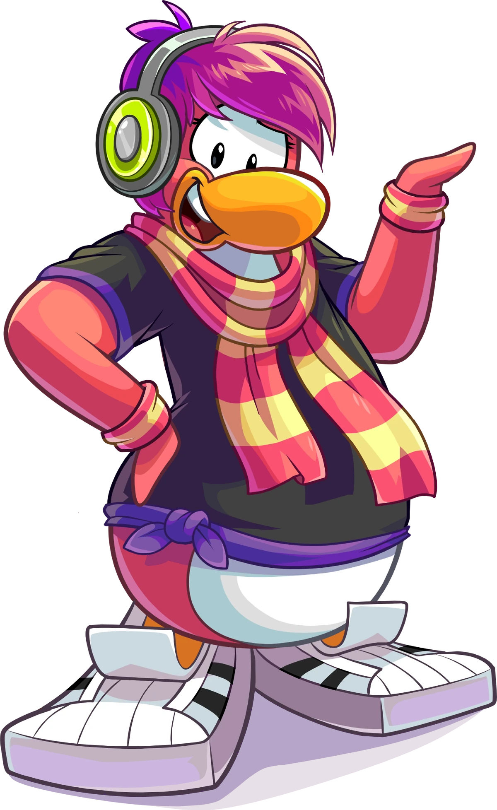

Pinguinando
Personagens

Dj Cadence
Cadence é uma Dj, cantora, dançarina e artista musical muito popular no Club Penguin. Sua frase favorita “É Hora de Dançar” representa muito bem sua personalidade. Além de uma grande artista, Cadence também é apaixonada por moda e roupas, já tendo até apresentado a festa “Fahion Show” na loja de roupas. A personagem gosta de se chamar de “Máquina de Dança” e possui um puffle roxo chamado Lolz. Assim como outros personagens, Cadence circula pela ilha distribuindo fundos de tela gratuitos.